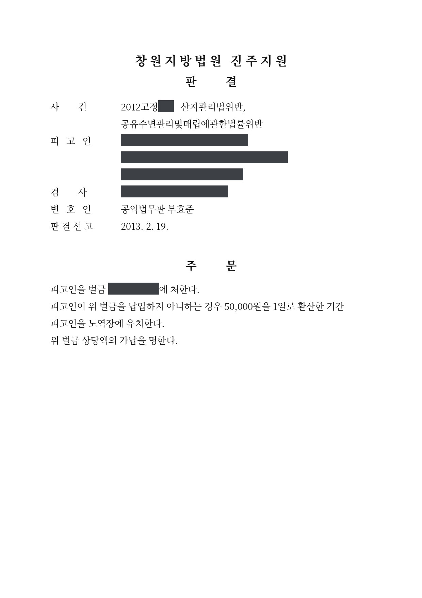

임도 개설·구거 점용 관련 산지관리법·공유수면법 위반 혐의 사건 변호 (벌금형)
창원지방법원 진주지원 · 피고인 변호 · 담당변호사 부효준
판결문

사건의 요지
산지전용신고 없이 임야에 임도를 내고, 허가 없이 국가 소유 구거를 점용·사용하였다는 산지관리법위반, 공유수면 관리 및 매립에 관한 법률위반의 공소사실로 기소된 피고인을 변호한 사건입니다. 법원은 벌금형을 선고하였습니다.
비슷한 처분을 받으셨다면
행정처분은 처분이 있음을 안 날부터 90일 이내에 행정심판이나 취소소송으로 다투어야 하고, 기간이 지나면 돌이킬 수 없는 처분은 집행정지를 서둘러야 합니다. 처분서를 받은 날짜부터 확인해 드립니다.